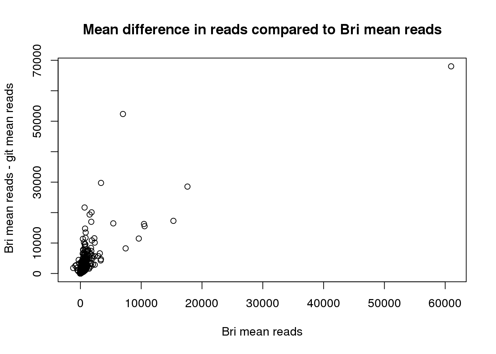
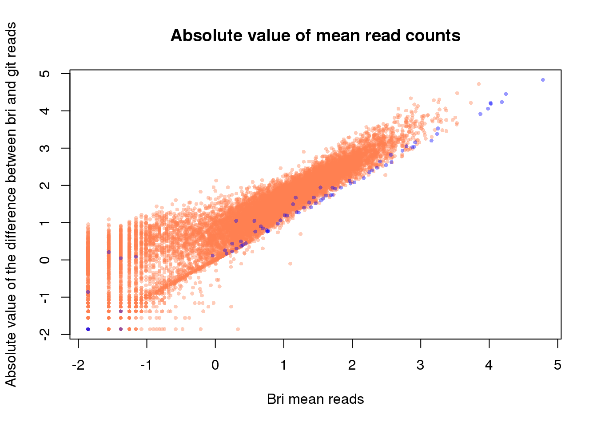
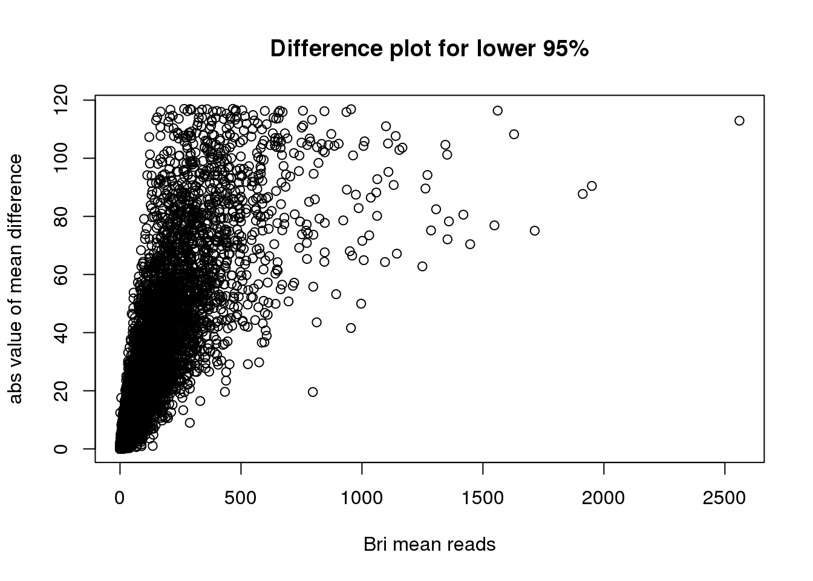

Last updated: 2017-03-06
Code version: f3c5dc0
library("biomaRt")
library("dplyr")
library("edgeR")
library("ggplot2")
theme_set(theme_bw(base_size = 12))
source("../../singleCellSeq/analysis/functions.R")reads <-read.table("../../singleCellSeq/data/reads.txt", header=TRUE, stringsAsFactors = FALSE)
#subset to look at same cells I did
reads_subset <-reads[ ,grep("NA19098.r1.A|NA19098.r1.B|NA19098.r1.C|NA19098.r1.D|NA19098.r1.E|NA19098.r1.F", colnames(reads))]
reads_bri<-read.table("../data/reads_bri.txt", header=TRUE, stringsAsFactors= FALSE)Create a single matrix with the common genes in both sets.
#make my data different
colnames(reads_bri)<- paste0(colnames(reads_bri), "-bri")
#list of common genes
common_genes <- intersect(row.names(reads_subset), row.names(reads_bri))
reads_subset_common <- reads_subset %>% filter(row.names(reads_subset) %in% common_genes)
row.names(reads_subset_common)<- common_genes
reads_bri_common <- reads_bri %>% filter(row.names(reads_bri) %in% common_genes)
row.names(reads_bri_common)<- common_genes#combine read matrics
reads_all_common <-cbind(reads_subset_common, reads_bri_common)
#remove genes that are never seen
genes_in_reads_all_common<- rownames(reads_all_common)[rowSums(reads_all_common) > 0]
reads_all_common_no0 <- reads_all_common %>% filter(row.names(reads_all_common) %in% genes_in_reads_all_common)
row.names(reads_all_common_no0) <- genes_in_reads_all_commonpca_commongenes <- run_pca(reads_all_common_no0)
contains_bri<- ifelse(grepl("bri", colnames(reads_all_common_no0)), "Bri", "git")
list_of_cells<- colnames(reads_all_common_no0)
analysis_rounds<- cbind(list_of_cells, contains_bri)
pca_commongenes_plot <- plot_pca(pca_commongenes$PCs, explained = pca_commongenes$explained, color="contains_bri" ) + labs(title="Reads in github and Bri analysis")
pca_commongenes_plotreads_subset_mean<- apply(reads_subset_common, 1, mean)
reads_bri_mean<-apply(reads_bri_common,1, mean)
distribution_reads <-data.frame(reads_subset_mean, reads_bri_mean)
cor(distribution_reads) reads_subset_mean reads_bri_mean
reads_subset_mean 1.0000000 0.8535153
reads_bri_mean 0.8535153 1.0000000reads_subset_common_matrix <- data.matrix(reads_subset_common)
reads_bri_common_matrix <- data.matrix(reads_bri_common)
#create matrix with difference of mine vs git data
diff_matrix= reads_bri_common_matrix - reads_subset_common_matrix
#create difference matrix with absolute difference between datasets
abs_diff_matrix= abs(reads_bri_common_matrix- reads_subset_common_matrix)
reads_dif_mean<- apply(diff_matrix, 1, mean)
index_ERCC <- grep("ERCC", names(reads_bri_mean))
ERCC_genes <- names(reads_bri_mean)[index_ERCC]
which_ERCC <- as.numeric(names(reads_bri_mean) %in% ERCC_genes) + 1
col_vec <- c("coral", "blue")[as.numeric(which_ERCC)]
plot(reads_bri_mean~reads_dif_mean, main="Mean difference in reads compared to Bri mean reads", xlab="Bri mean reads", ylab = " Bri mean reads - git mean reads" )
#plot abs value difference
reads_abs_dif_mean <- apply(abs_diff_matrix,1, mean)
library("scales")
plot(log10(reads_bri_mean) ~ log10(reads_abs_dif_mean), main= "Absolute value of mean read counts", xlab="Bri mean reads", ylab = "Absolute value of the difference between bri and git reads", pch = 16, cex = .6,
col = alpha(col_vec, .4))
#which gene is so different?
reads_abs_dif_mean[which.max(reads_abs_dif_mean)]ERCC-00074
60974.06 This shows that the difference is in the direction of bri having larger read counts in most places.
cut_off_difference<- quantile(reads_abs_dif_mean, 0.95)
cut_off_difference 95%
117.1618 #reads_abs_95 <- reads_abs_dif_mean[cut_off_difference
reads_abs_dif_mean_df <- data.frame(reads_abs_dif_mean)
reads_abs_dif_95 <- reads_abs_dif_mean_df[reads_abs_dif_mean_df$reads_abs_dif_mean < cut_off_difference, , drop = FALSE]
reads_bri_mean_df<- data.frame(reads_bri_mean)
common_genes_95 <- intersect(row.names(reads_abs_dif_95),row.names(reads_bri_mean_df))
reads_bri_mean_95 <- reads_bri_mean_df[row.names(reads_bri_mean_df) %in% common_genes_95, , drop=FALSE]
plot(reads_abs_dif_95$reads_abs_dif_mean ~ reads_bri_mean_95$reads_bri_mean, main="Difference plot for lower 95%", ylab="abs value of mean difference", xlab="Bri mean reads")
percent_change_m<- ((reads_bri_common_matrix- reads_subset_common_matrix)/2)
mean_percent_change<- apply(percent_change_m,1, mean)
plot(mean_percent_change~ reads_bri_mean, main="Average change as a function of bri mean reads", ylab = "(bri-git)/2")reads_subset_common_matrix <- data.matrix(reads_subset_common)
reads_bri_common_matrix <- data.matrix(reads_bri_common)
percent_diff<- ((reads_subset_common_matrix - reads_bri_common_matrix)/(.5* (reads_subset_common_matrix + reads_bri_common_matrix)))
percent_diff_mean= apply(percent_diff,1, mean)
plot(percent_diff_mean~reads_bri_mean)percent_diff_mean[which.max(percent_diff_mean)]ENSG00000183513
0.5207729 reads_bri2<-read.table("../data/reads_bri.txt", header=TRUE, stringsAsFactors= FALSE)
ERCC_74 <- rbind(reads_subset["ERCC-00074",], reads_bri2["ERCC-00074",])
row.names(ERCC_74) <- c("git", "bri")
ERCC_74.T= ERCC_74 %>% t
plot(ERCC_74.T[,"git"] ~ERCC_74.T[,"bri"], main="Compare ERCC74 in 2 data sets", ylab="git", xlab="bri")ERCC_74.T_df=data.frame(ERCC_74.T)
ERCC74_diff= ERCC_74.T_df$bri- ERCC_74.T_df$git
ERCC_74_dif<-cbind(ERCC_74.T_df,ERCC74_diff)
plot(ERCC_74_dif$ERCC74_diff ~ERCC_74_dif$bri, main="read count difference in ERCC74", xlab="bri read count", ylab="difference in read count")labels_boxplot= c("git", "bri")
boxplot(ERCC74_diff, main="Difference in ERCC00074 read counts")boxplot(ERCC_74.T_df$git, ERCC_74.T_df$bri, las=2, names=c("git", "bri"), ylab="Read count")ERCC_74_dif[which.max(ERCC_74_dif$ERCC74_diff),] git bri ERCC74_diff
NA19098.r1.E01 16512 141174 124662Check if this gene is in the quality single cells list.
quality_single_cells <- scan("../data/quality-single-cells.txt",
what = "character")
"NA19098.r1.E01" %in% quality_single_cells[1] TRUEThis cell was included in the analysis.
For a baseline I will look at another ERCC gene
"ERCC-00045" %in% common_genes_95[1] FALSEERCC_67 <- rbind(reads_subset["ERCC-00067",], reads_bri2["ERCC-00067",])
row.names(ERCC_67) <- c("git", "bri")
ERCC_67.T= ERCC_67 %>% t
plot(ERCC_67.T[,"git"] ~ ERCC_67.T[,"bri"], main="Compare ERCC67 in 2 data sets", ylab="git", xlab="bri")ERCC_67.T_df= data.frame(ERCC_67.T)
boxplot(ERCC_67.T_df$git, ERCC_67.T_df$bri, las=2, names=c("git", "bri"), ylab="Read count")boxplot(ERCC_67.T_df$git, ERCC_74.T_df$bri, las=2, names=c("git-67", "git-74"), ylab="Read count")sessionInfo()R version 3.3.2 (2016-10-31)
Platform: x86_64-redhat-linux-gnu (64-bit)
Running under: Scientific Linux 7.2 (Nitrogen)
locale:
[1] LC_CTYPE=en_US.UTF-8 LC_NUMERIC=C
[3] LC_TIME=en_US.UTF-8 LC_COLLATE=en_US.UTF-8
[5] LC_MONETARY=en_US.UTF-8 LC_MESSAGES=en_US.UTF-8
[7] LC_PAPER=en_US.UTF-8 LC_NAME=C
[9] LC_ADDRESS=C LC_TELEPHONE=C
[11] LC_MEASUREMENT=en_US.UTF-8 LC_IDENTIFICATION=C
attached base packages:
[1] parallel stats4 grid stats graphics grDevices utils
[8] datasets methods base
other attached packages:
[1] broman_0.65-1 gplots_3.0.1 matrixStats_0.51.0
[4] MASS_7.3-45 gridExtra_2.2.1 lme4_1.1-12
[7] workflowr_0.4.0 org.Hs.eg.db_3.4.0 GOstats_2.40.0
[10] graph_1.52.0 Category_2.40.0 Matrix_1.2-7.1
[13] GO.db_3.4.0 AnnotationDbi_1.36.2 IRanges_2.8.1
[16] S4Vectors_0.12.1 Biobase_2.34.0 BiocGenerics_0.20.0
[19] Humanzee_0.1.0 sva_3.22.0 genefilter_1.56.0
[22] mgcv_1.8-15 nlme_3.1-128 BiocInstaller_1.24.0
[25] scales_0.4.1 VennDiagram_1.6.17 futile.logger_1.4.3
[28] edgeR_3.16.5 limma_3.30.11 dplyr_0.5.0
[31] testit_0.6 data.table_1.10.4 biomaRt_2.30.0
[34] cowplot_0.7.0 stringr_1.2.0 reshape2_1.4.2
[37] rmarkdown_1.3 Citrus_0.99 easyGgplot2_1.0.0.9000
[40] ggplot2_2.2.1
loaded via a namespace (and not attached):
[1] httr_1.2.1 splines_3.3.2 gtools_3.5.0
[4] assertthat_0.1 RBGL_1.50.0 yaml_2.1.14
[7] RSQLite_1.1-2 backports_1.0.5 lattice_0.20-34
[10] digest_0.6.12 RColorBrewer_1.1-2 minqa_1.2.4
[13] colorspace_1.3-2 htmltools_0.3.5 plyr_1.8.4
[16] GSEABase_1.36.0 XML_3.98-1.5 devtools_1.12.0
[19] xtable_1.8-2 gdata_2.17.0 git2r_0.18.0
[22] tibble_1.2 annotate_1.52.1 withr_1.0.2
[25] lazyeval_0.2.0 survival_2.40-1 magrittr_1.5
[28] memoise_1.0.0 evaluate_0.10 tools_3.3.2
[31] munsell_0.4.3 locfit_1.5-9.1 lambda.r_1.1.9
[34] caTools_1.17.1 nloptr_1.0.4 RCurl_1.95-4.8
[37] rstudioapi_0.6 AnnotationForge_1.16.1 bitops_1.0-6
[40] labeling_0.3 gtable_0.2.0 DBI_0.5-1
[43] curl_2.3 R6_2.2.0 knitr_1.15.1
[46] rprojroot_1.2 futile.options_1.0.0 KernSmooth_2.23-15
[49] stringi_1.1.2 Rcpp_0.12.9 This site was created with R Markdown